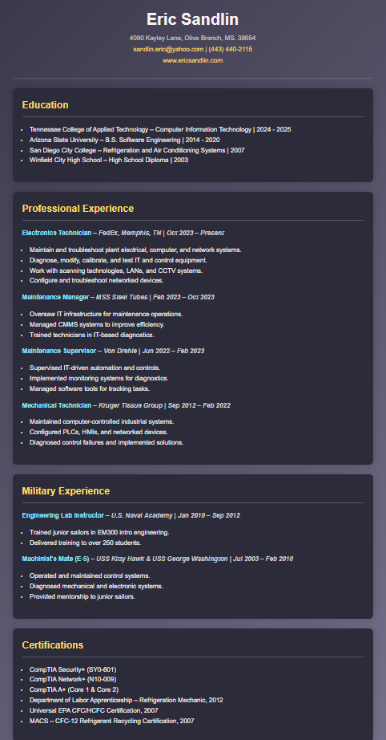

Home
Certifications
Click hyperlink for printable PDFs
Industrial Mechanic Resume
Software Engineer Resume
HVAC&R Resume
Instrumentation Tech Resume
Electronics Tech Resume

Computer Information Systems Tech Resume
Reliability and Maintenance Manager Resume
Foreign Service Officer Resume